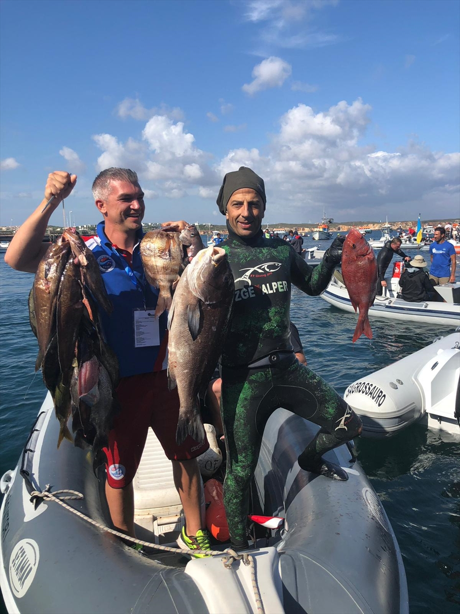

Milli sporcumuz Ahmet Tekin

Milli Sporcumuz, Portekiz’deki Dünya Şampiyonası’nın “En Büyük Balık Avlayan Sporcu” Ödülünü Kazandı
31.CMAS Zıpkınla Balık Avı Dünya Şampiyonası’nda Milli Takım sporcularımızdan Ahmet Tekin, yakaladığı yaklaşık 7 kiloluk balık ile şampiyonanın en önemli ödüllerinden “En Büyük Balığı Avlayan Sporcu” ödülünü aldı. İspanya’nın Dünya Şampiyonu olduğu yarışmada, Zıpkınla Balık Avı Milli Takımı’mız, 30 ülke arasında 11. oldu.
Portekiz’in Sagres kasabasında 6 Eylül’de başlayan 31. CMAS Zıpkınla Balık Avı Dünya Şampiyonası dün sona erdi. 30 ülkenin sporcuları, en yüksek puanı getiren en fazla balığı avlamak için açık denizde tek nefeste birçok dalış gerçekleştirdiler. Rekabet ve heyecanın dünya çapında yaşandığı şampiyonada, Türkiye Sualtı Sporları Federasyonu (TSSF) Başkanı Doç. Dr. Şahin Özen’in kafile başkanlığını, Aris Moukas ve Sedat Osmanoğlu’nun antrenörlüğünü yaptığı, Fırat Yağcı Ahmet Tekin, Semih İnce ve Selim Konya’dan oluşan A Milli Takımı’mız, elde ettiği sonuçlarla gelecek için umut vadetti.